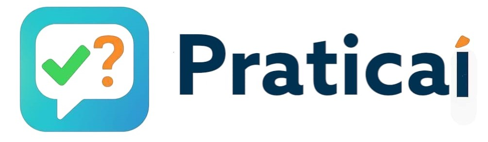

Quiz Educativos
Quiz Educativos
Escolha uma opção:
📚 Quiz Escolar
💚 Quiz Saúde
🌿 Quiz Meio Ambiente
✨ Dicas + FalaSaúde
Escolha a matéria:
Português
Matemática
Inglês
🔙 Voltar
Próxima ➡
🔙 Menu
Dicas da Aivy
💧 Beba água
💚 Cuide da saúde
🌱 Preserve o meio ambiente
📲 WhatsApp
🔙 Voltar